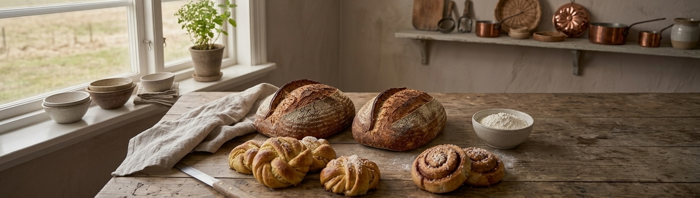
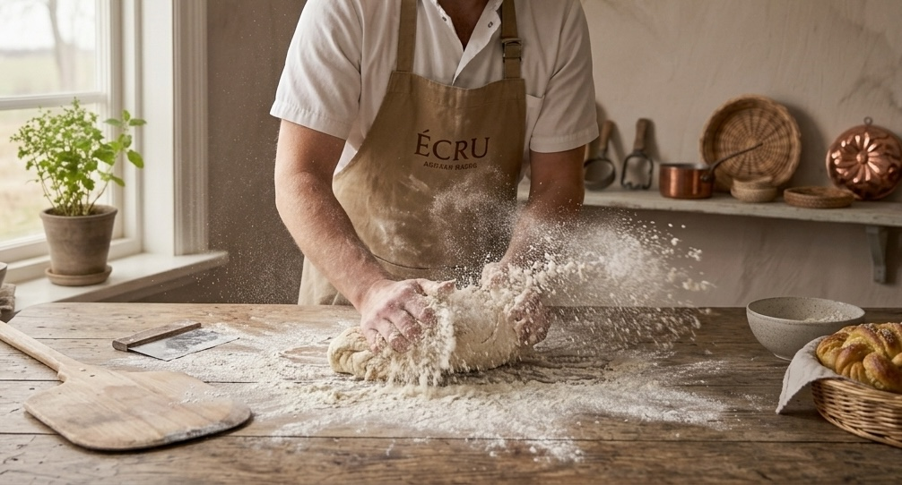

Écru Bageri
Upptäck sortimentetVårt bageri
På Écru Bageri bakar vi från grunden med omsorg om varje detalj. Våra bröd och bakverk tillverkas med noggrant utvalda råvaror och gräddas till perfektion i stenugn.
Vi erbjuder ett utvalt sortiment av surdegsbröd, rågbröd, bullar och andra bakverk. Vårt utbud följer årstiderna och förenar klassiska smaker med genuint hantverk.

Utvalda favoriter

Surdegsbröd
Långjäst surdegsbröd bakat på ekologiskt dinkelmjöl och råg.

Kardemummabullar
Luftiga bullar fyllda med nymald kardemumma och farinsocker.

Kanelbullar
Saftiga kanelbullar med fyllning av kanel och smör.